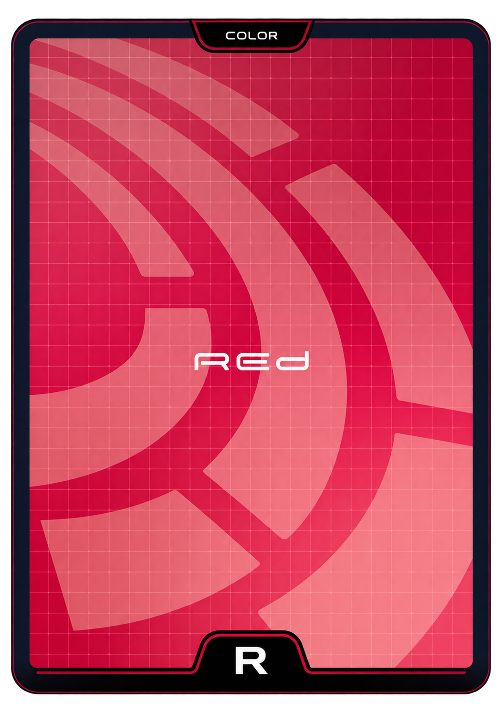
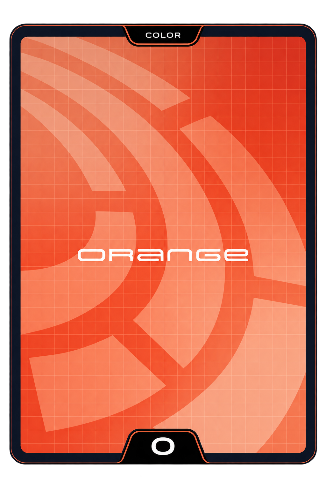
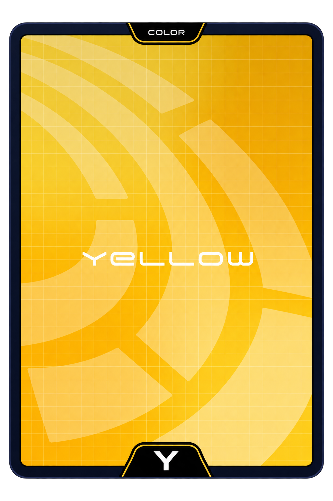
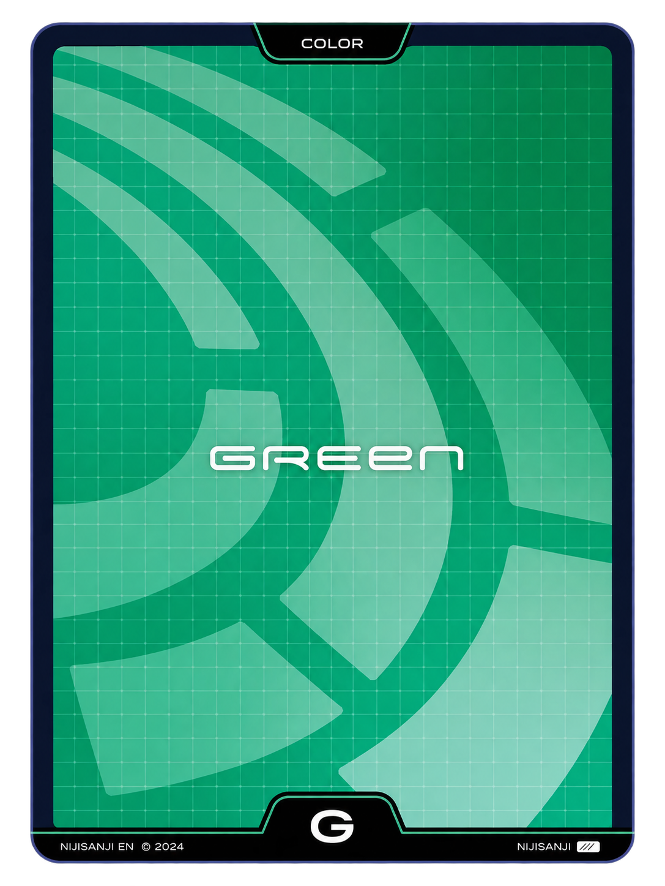
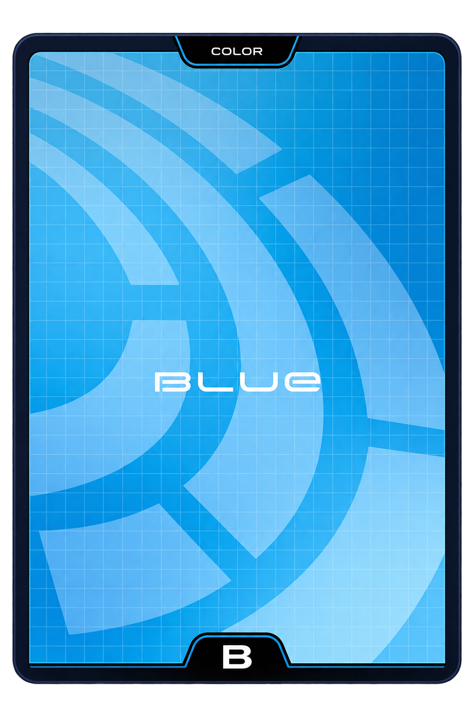
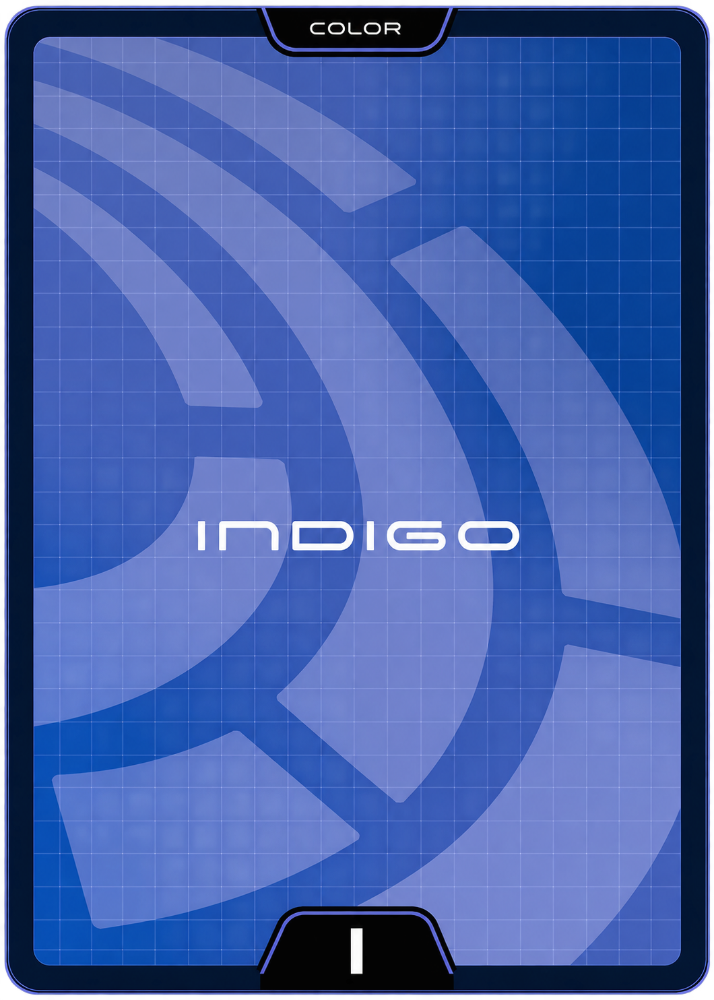
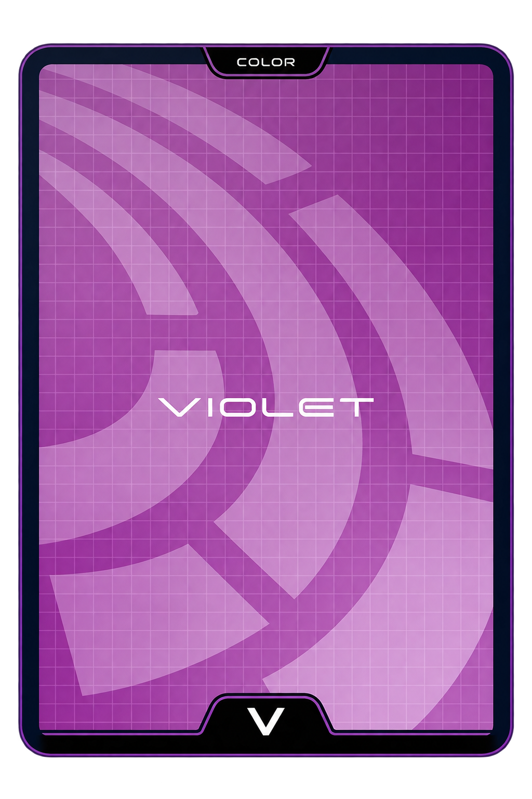
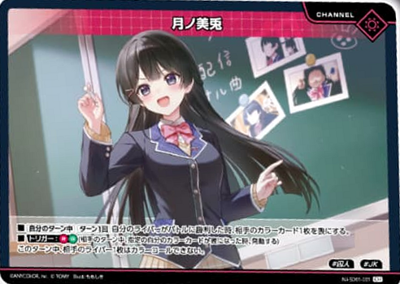

라이버와 함께 필드를 펼치고컬러 콜로 무지개를 완성하세요.







플레이할 모드를 선택하세요.

메인 덱 50장 · 컬러 7장 · 채널 1장
주사위로 선후공을 정하세요.
높은 숫자가 선공 · 같은 숫자면 다시 굴립니다.
카드를 누르면 수치와 효과를 확인할 수 있습니다. 메인 덱 수량은 시뮬레이션으로 선정한 개선 구성입니다.
로비에서 중급 AI 또는 로컬 2인 모드를 선택하세요. 선후공은 다이스로 정하며, 엔드에서 턴을 종료하면 상대에게 넘어갑니다.
필드 라이버는 최대 5장입니다. 동률 배틀은 방어자만 트래시로 보냅니다. 덱 소진 시 자기 니지 카드가 적은 쪽이 승리하며, 동수면 소진된 쪽이 패배합니다.
50장 시뮬레이션 개선 덱 · 카드 효과 자동 처리
카드를 드래그해 배치하고, 더블클릭해 확대합니다. 메인 페이즈에 필드로 내리면 레벨 비용을 선택합니다.
패 없음
최근 카드부터 표시합니다. 카드를 가리키면 정보를 확인할 수 있습니다.
트래시로 보낼 손패 또는 필드 캐릭터를 선택하세요. 내리는 카드 자체와 채널·세트·스테이지는 비용으로 선택할 수 없습니다.